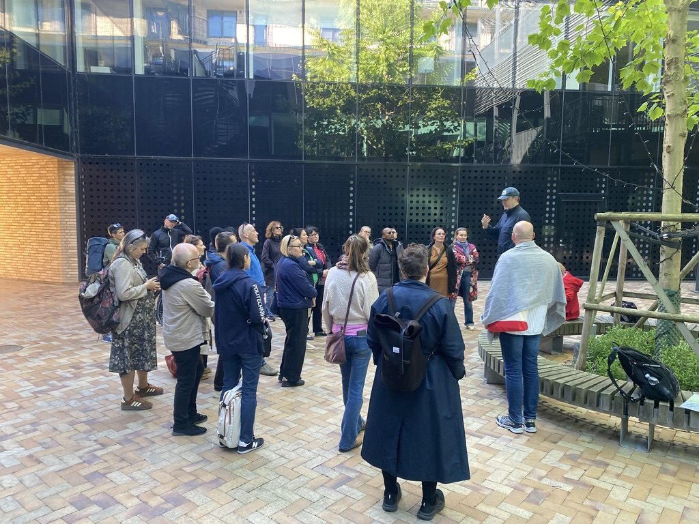
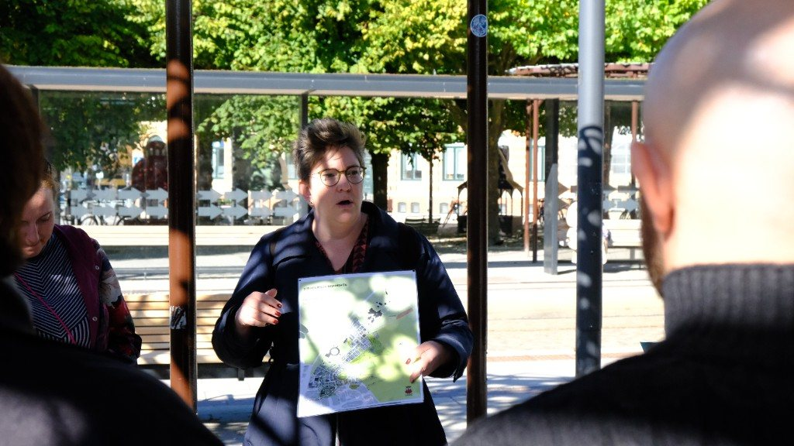
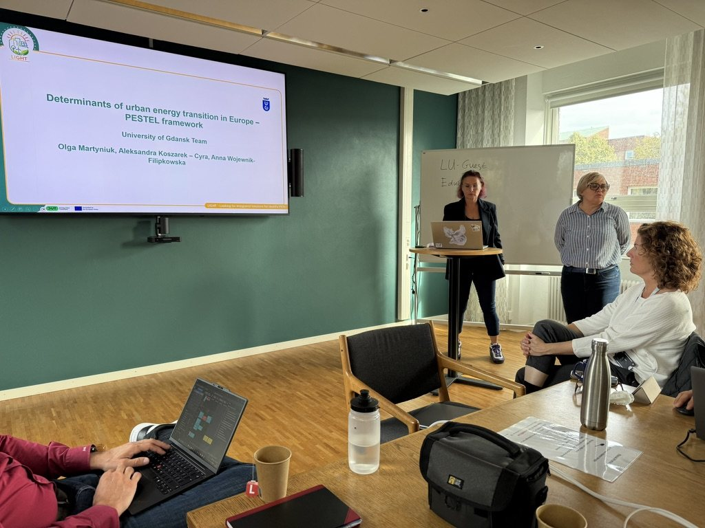
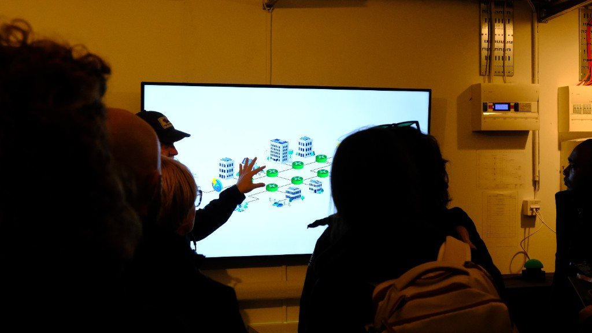
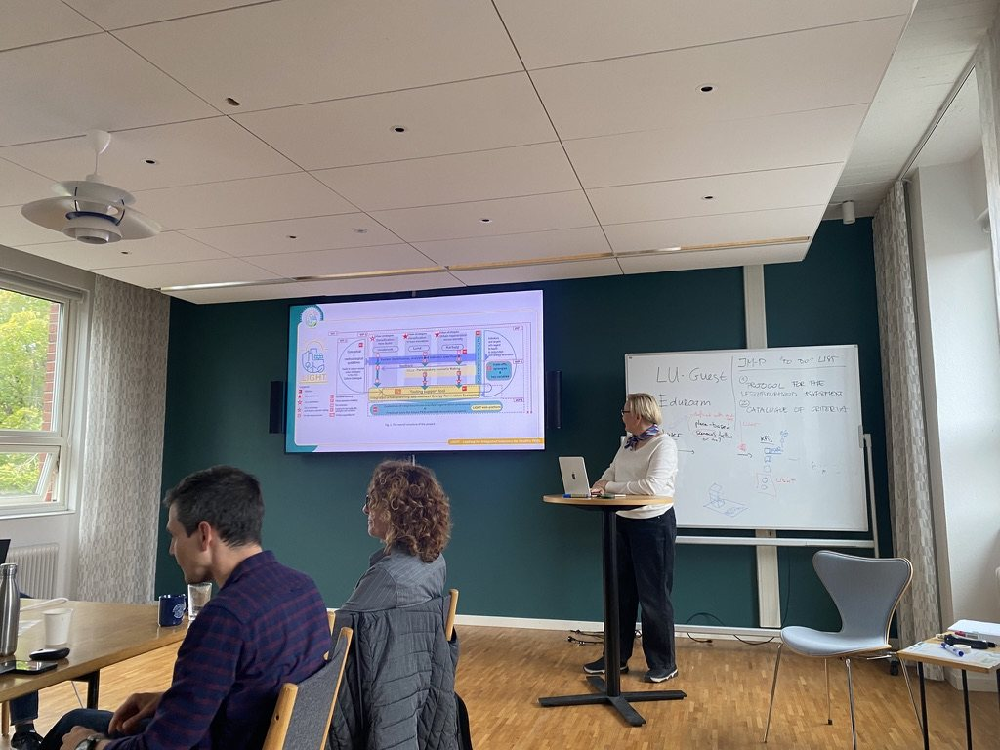
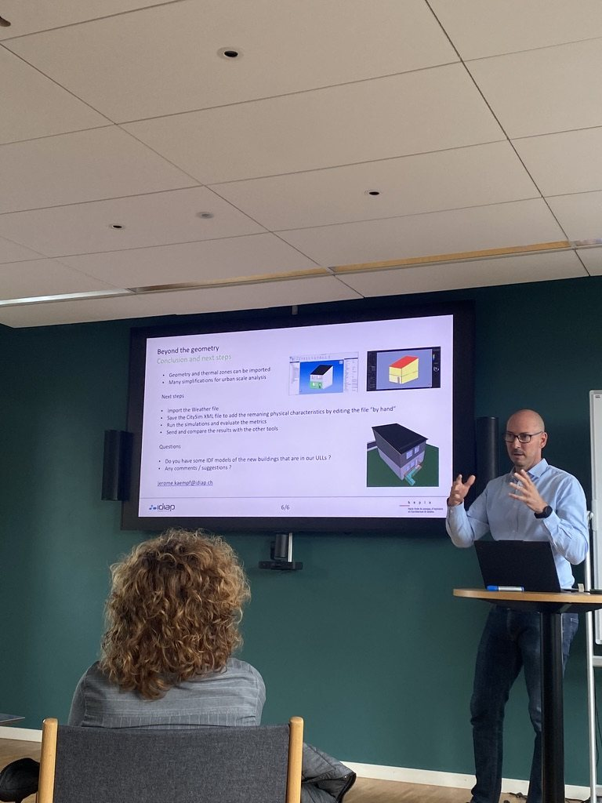
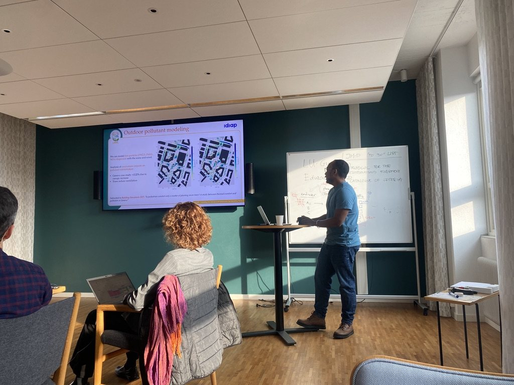

27–30.09.2026 · Lund
27–30 września 2026 r. partnerzy projektu LIGHT spotkali się w Lund.
W programie były sesje robocze. Jedna z nich dotyczyła narzędzi DALEC. Partnerzy wyszli też w teren: odbył się lot dronem, rozmowa na dziedzińcu i spacer po mieście, między innymi przy przystanku Lund C.











